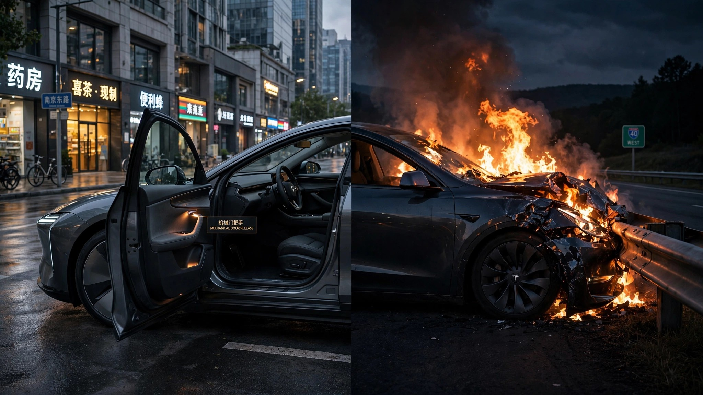

China Fixed the Car Door Problem in 2025. America Won't Start Until 2030.

Beijing solved it with a page and a half of regulation. China's GB 48001-2026 standard, finalized last year, requires every new vehicle sold in the country to have a mechanical door release that works without electrical power starting in 2027.[1] Hong Kong went further, moving to ban new EVs with electronic-only handles outright. BMW is already manufacturing China-specific iX3 doors with compliant mechanical releases.
On July 24, NHTSA denied a petition to investigate 179,031 Model 3s for a door-release defect. The reason was almost elegant in its bureaucratic circularity: FMVSS 206, the federal standard governing door locks and latches, contains zero requirements for the labeling or location of a mechanical door release.[2] The agency found exactly one consumer complaint matching the petition, from the same owner who filed it. His Model 3 lost power in a head-on collision. He could not locate the manual release. He climbed through the back seat and escaped through a rear window.[3]
In the same breath, NHTSA granted a separate petition to begin rulemaking for an entirely new safety standard requiring "a robust and obvious door egress system."[2] Michael Brooks, executive director of the Center for Auto Safety, put the timeline bluntly: "I wouldn't expect to see a final compliance date for manufacturers before 2030 even if the rulemaking proceeds swiftly."[4]
A Bloomberg investigation in December 2025 documented at least 15 deaths in crashes where occupants or rescuers could not open Tesla doors after fires broke out.[5] Tesla sold 467,762 Model 3 and Model Y units in Q2 2026 alone. At current quarterly volume, roughly 5.6 million of these vehicles will reach American driveways before any U.S. door standard takes effect. Every one of them will comply with FMVSS 206, because FMVSS 206 does not require what China already mandates.
BMW's response to China's standard is the quiet proof that the engineering is trivial. Building a mechanical release into an electronically actuated door is not a moonshot. It is a latch, a cable, and a clearly labeled pull. BMW is doing it for the Chinese market right now. The company chose to build two versions of the same door rather than apply the safer design globally, because no other market demands it yet.[1]
This pattern has precedent. Euro NCAP's pedestrian protection tests, introduced in 2002, initially looked like a European quirk. Within a decade, automakers redesigned front-end structures globally because maintaining two hood profiles for two markets cost more than building one safe one.[6] China's door mandate could follow the same arc. The cheapest path is always to build one version that satisfies the strictest rule on the books.
The strictest rule on the books is in Beijing, not Washington.
What this means for you
If you drive a vehicle with electronic door handles (Tesla, Rivian, some BMW and Mercedes models): locate the manual release now, before you need it. Tesla puts it next to the window controls, a small lever most passengers have never noticed. Practice opening the door with it. Show your passengers. The 2022 Model 3 owner's manual includes an "In Case of Emergency" section with illustrations, which is useful only if you read it before the crash. If you are buying a new car: ask whether the doors open mechanically after a total power loss. If the salesperson has to check, that is your answer.
Sources & References
- Carscoops, “Tesla's Hidden Door Handle Drama Could Change Every New Car In America,” July 26, 2026. carscoops.com
- Reuters, “US agency rejects petition seeking Tesla door-release defect probe,” July 24, 2026. reuters.com
- Electrek, “NHTSA denies Tesla door-release defect petition, opens new door rules,” July 24, 2026. electrek.co
- CarBuzz, “The Feds Are Getting Serious About Ending Dumb Electric Door Handles. Eventually,” July 28, 2026. carbuzz.com
- Scientific American, “NHTSA considers new car door safety rules after fatal Tesla crashes,” July 23, 2026. scientificamerican.com
- IIHS, “Vehicles with higher, more vertical front ends pose greater risk to pedestrians,” 2024. iihs.org